MPSim · Material Property Simulation
MPSim computes the effective properties of semiconductor materials from their microstructure. The microstructure is generated on a voxel RVE, the governing equations are solved on it, and the local fields of heat, current, stress and flow are visualised.
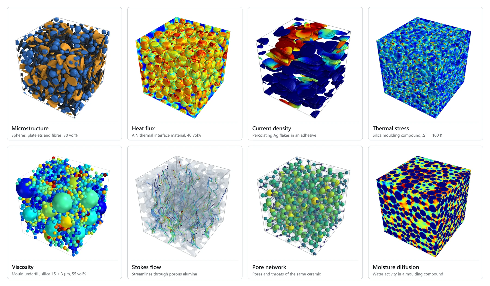
How it works
MPSim carries out the workflow of a digital-material study in one browser workspace. It runs on a single PC or on a server accessed from the network; data do not leave the machine.
Build the microstructure
Fillers of any shape, size distribution (normal, log-normal or a measured particle-size file) and orientation, pores, coatings, hollow particles, multi-filler blends and thin films, dispersed evenly or unevenly (a region, a gradient, clusters), sheared or compressed while the resin flows, on a voxel representative volume element (RVE) whose size is checked against measured criteria. Every dimension of a particle can have a distribution of its own, and the sizes the structure holds are set against the input in every dimension; the particles are written as files that redraw the structure voxel for voxel. A structure can also be read from a TIFF image (CT, FIB-SEM, segmented labels); its touching particles are separated, and its viscosity is computed from them. A particle list (particles.csv of an earlier run, or a table of spheres) draws a structure again without generating it.
Solve the physics
Validated open-source solvers (periodic finite volumes, FFT-accelerated voxel finite elements, NASA PuMA, PoreSpy and openEMS) compute the effective tensors, which are compared with rigorous bounds.
Evaluate the fields
Interactive 3D and 2D views of every field, animated field lines, publication figures and a single-file HTML report; every number states the method that produced it.
Analyses
MPSim targets the materials of semiconductor packaging, devices and process equipment: moulding compounds, underfills, thermal interface materials, conductive adhesives, dielectrics, EMI absorbers, porous ceramics and filters.
Thermal and electrical
- Conductivity tensors, interfacial and contact resistance, electrical contact resistance of pastes
- Finite volume on voxels, or finite elements on a tetrahedral mesh fitted to the particles (the same values as FEniCSx on the same mesh)
- Percolation of conductive fillers
Dielectric, magnetic, EMI
- Dk, Df, field enhancement, permeability
- Shielding effectiveness with a full-wave check
Elasticity, CTE and testing
- Stiffness, engineering constants, CTE tensor
- Thermal stress; α1 / α2 above Tg
- Tension or compression test by displacement, force or pressure: force-displacement line, stress fields, load at the matrix strength
Viscosity and flowability
- Viscosity of uncured compounds, flow curves
- Particle dynamics of the fillers: particle-size effect and shear thinning, on CPU or GPU
- Maximum packing, underfill filling time, settling
- Compression of the RVE in 3D while its resins flow: the strain and von Mises stress of each region, pores that close
Coupled analyses
- Thermal stress and warpage of a film from the heat flowing through it: temperature field, per-voxel thermal strain by Tg, laminate release free, on a substrate or held flat
- Joule heating with a temperature-dependent resistance, up to thermal runaway
- Cure of the resins while the RVE is pressed: Kamal–Sourour kinetics, Castro–Macosko viscosity, gel stop
Moisture
- Moisture diffusivity and saturated uptake
- Uptake curve of a part, hygroscopic swelling (CME)
Flow, filtration, acoustics
- Permeability, filtration efficiency, tortuosity
- Acoustic absorption, radiative extinction
Morphology
- Porosity, size distributions, porosimetry
- Pore networks, grain statistics, percolation paths
- Grain analysis: volume-equivalent and circumscribed diameters by number and by volume, every dimension against the input
Calibration
- Unknown material values from measured properties, including viscosity
- Credible intervals, identifiability, next measurement
- Every parameter set solved, and the reason when no value reaches a measurement
DOE and optimisation
- Factorial and Latin-hypercube studies, filler shares; every case on the Domain as set, one fixed RVE edge or one per case
- Linked inputs: one factor sets several entries (x, 0.8·x, sqrt(x1·x2))
- Realised filler content and shares reported for every case
- Gaussian-process surrogates, NSGA-II
Sensitivity analysis
- 25 measures on a study: correlation, regression and ANOVA, dependence, machine learning with SHAP, Sobol, PCE, eFAST, Morris, DGSM, PAWN
- Five interaction measures, partial dependence and ALE
- A consensus weighted by each model's cross-validated Q²; every response at once
Application example: a mould underfill from flow to cure
One compound is followed through the analyses relevant for a moulded underfill (MUF): epoxy filled with fused silica of 15 µm and 3 µm at 55 vol%. The viscosity of the uncured compound is computed by particle dynamics. The same particle dynamics shears a random packing in the resin, and the resulting arrangement is taken as the cured microstructure, on which heat conduction, thermal expansion, stiffness, permittivity and moisture uptake are solved (60 µm RVE, 240³ voxels). The presets MUF · epoxy + silica 15 + 3 µm 55 vol% and MUF · from flow to the cured part reproduce all results.
Viscosity of the uncured compound
The particle dynamics resolves lubrication between neighbouring particles, frictional contacts and van der Waals attraction; every particle translates and rotates in a periodic box sheared by Lees–Edwards boundaries, and the relative viscosity follows from the stress carried by the particles. The viscosity overshoots while the shear microstructure forms and reaches a steady value from a strain of about 6; it is averaged over the second half of the run: μr = 24 ± 3, the uncertainty being the expected scatter between independent packings. With the shear-thinning resin the compound reaches 33 Pa·s at 10 s⁻¹.
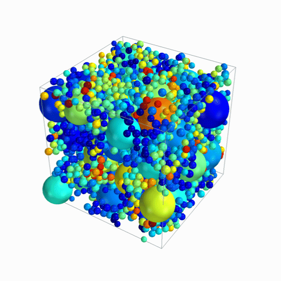
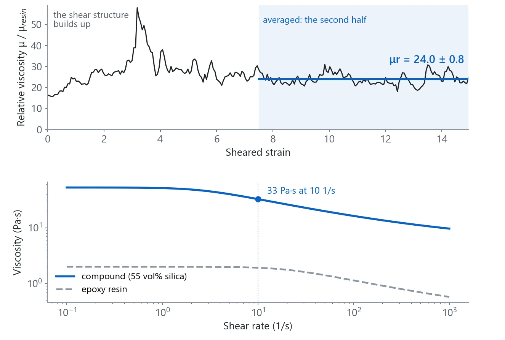
| Derived quantity | Value |
|---|---|
| Maximum packing fraction φm (Farr–Groot) | 0.77 |
| Capillary filling of a 50 µm × 10 mm gap (Washburn, 30°) | 108 min (resin alone 6.3 min) |
| Settling of the 15 µm silica in 30 min before gelation | 2.9 µm (41 times slower than an isolated particle) |
Microstructure after shear flow
The random packing is sheared with the flow along x and the velocity gradient along z to a whole-number strain (10), at which the sheared periodic images coincide with the ordinary ones. The number of close pairs (surfaces within 5 % of the sum of the radii) increases from 1.7 to 3.8 per sphere, and the pairs orient along the compression axis of the shear (135° from the flow direction) while the extension axis (45°) is depleted, as known for sheared non-Brownian suspensions (Morris, Rheol. Acta 48, 909 (2009)). The contents of the drawn structure equal the input (38.50 and 16.50 vol%).
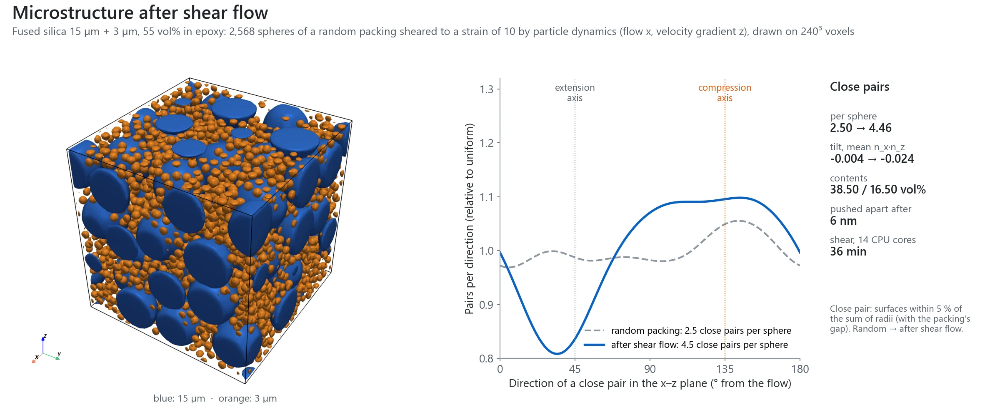
Thermal conductivity
Steady heat conduction is solved with periodic finite volumes along x, y and z (as computed with 5.10.2; since 5.12.0 the thermal conductivity is solved on the tetrahedral FEM by default). The conductivity through the gap, 0.596 W/m·K, is 3.0 times that of the resin, 9.5 % above the Maxwell–Garnett estimate (the lower Hashin–Shtrikman bound, 0.544) and well below the Bruggeman estimate (0.685): at a conductivity ratio of 7 the points where particles touch carry little of the heat. The shear brings particles into contact and raises the conductivity by 3.5 % through the gap and 4.0 % along y (0.7 % along the flow), of the order of the scatter of one realisation. Refining the grid from 240³ to 360³ changes k_z by −0.04 %.
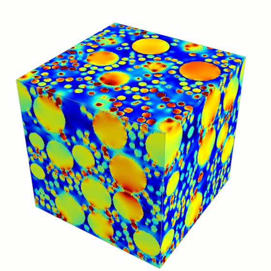
| Direction | Random packing | After shear flow | Change |
|---|---|---|---|
| x (flow) | 0.584 | 0.588 | +0.7 % |
| y (vorticity) | 0.579 | 0.602 | +4.0 % |
| z (gradient, through the gap) | 0.576 | 0.596 | +3.5 % |
W/m·K. A 1 mm layer has an area-specific resistance of 1678 mm²K/W; the thermal diffusivity is 0.400 mm²/s.
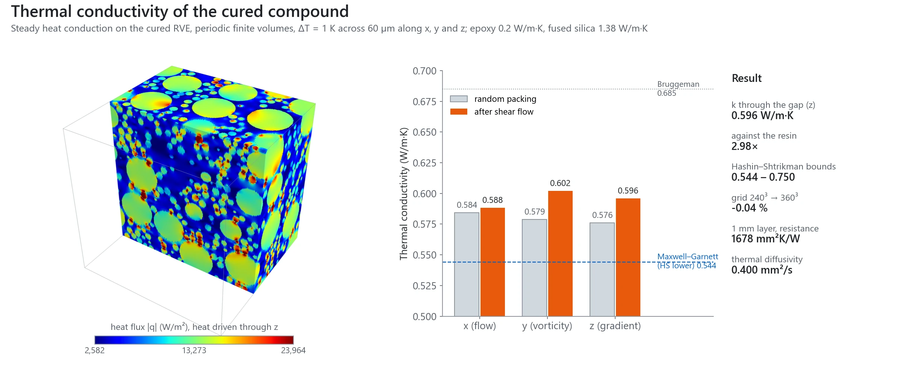
Thermal expansion and stiffness
FANS solves six unit strains and a uniform temperature change. The volumetric mean CTE, 16.5 ppm/K, lies below the Kerner estimate for separated spheres (22.6 ppm/K), since touching particles restrain the resin; the Hill modulus, 15.0 GPa (ν 0.25), lies within the Hashin–Shtrikman bounds (9.4–30.2 GPa). Fewer close pairs lie along the flow direction x, where E is lowest and α highest; the difference (up to 11 % in α, 5 % in E) is comparable with the scatter of one realisation. For a temperature rise of 100 K with the RVE held at its size, the von Mises stress concentrates in the fine filler and where particles touch (mean 23 MPa, 99th percentile 85 MPa in the 3 µm silica).
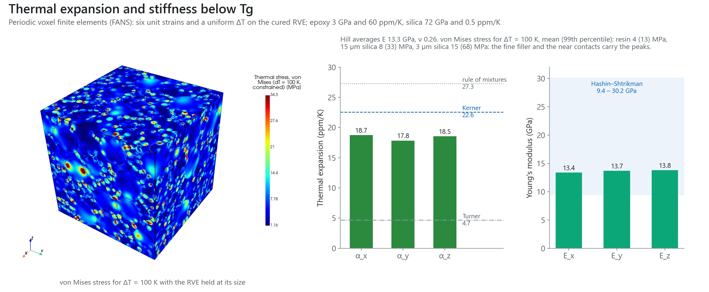
| Direction | α (ppm/K) | E (GPa) |
|---|---|---|
| x (flow) | 17.4 | 15.0 |
| y (vorticity) | 15.6 | 15.8 |
| z (gradient) | 16.4 | 15.5 |
Permittivity and dielectric loss
A quasi-static complex conduction solution gives Dk 3.845 in all three directions. The permittivities of silica (3.8) and epoxy (3.9) differ by 2.6 %, so that the Hashin–Shtrikman bounds coincide and the local field departs from the applied field by at most 2.9 %. The dissipation factor, 0.0068, equals the volume-weighted mean of the phases: fused silica leaves Dk unchanged and lowers Df in proportion to the resin it replaces.
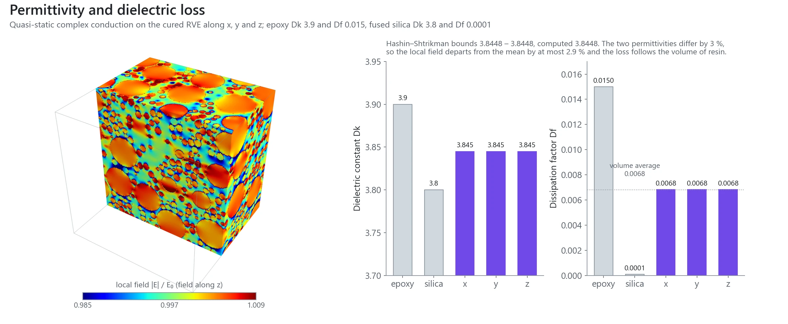
Moisture uptake and swelling
Diffusion is solved on the water activity, which is continuous across the phase boundaries; the silica does not absorb water. The effective diffusivity is 0.64 times that of the resin, 18 % below the Maxwell estimate for impermeable spheres (0.78), because the diffusion paths wind between closely spaced and touching particles. The silica restrains the hygroscopic swelling to 0.20 % at saturation.
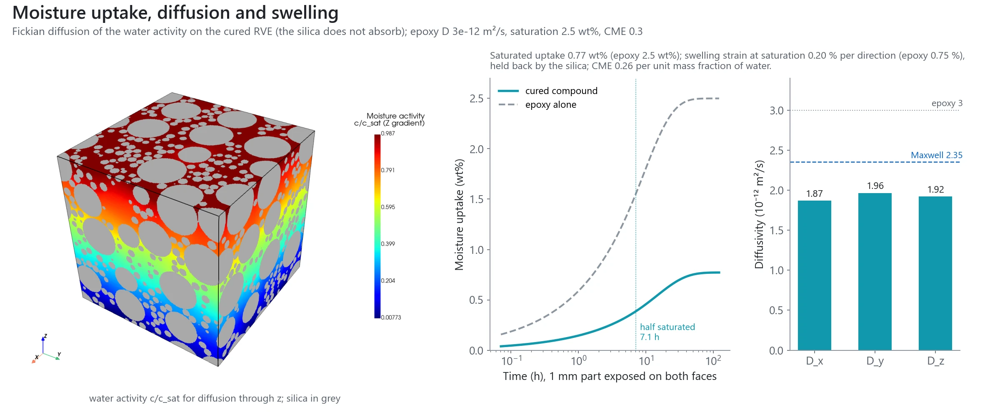
| Quantity | Cured compound | Epoxy |
|---|---|---|
| Saturated uptake | 0.77 wt% | 2.5 wt% |
| Diffusivity D_x / D_y / D_z (10⁻¹² m²/s) | 1.87 / 1.96 / 1.92 | 3.0 |
| 1 mm part: 50 % / 95 % of saturation | 7.1 h / 41 h | 4.6 h / 26 h |
| Swelling strain at saturation | 0.20 % | 0.75 % |
Finite elements on a mesh fitted to the particles
A voxel solver sees a particle as the voxels it holds: a staircase surface, and a contact wherever two voxels touch. The conduction-type properties (5.9.0) and the stiffness and thermal expansion (5.10.0) can also be solved by finite elements on a tetrahedral mesh that follows the particles' exact surfaces. The voxel solvers stay the default.
The same compound, on voxels and on the fitted mesh
- The lattice of the voxel corners is cut into tetrahedra, and every tetrahedron is cut where it crosses a particle's exact surface; a film of resin between two particles thinner than a voxel is carried as an interface element of its width.
- Alumina 45 vol% with BN platelets 5 vol% in epoxy: the finite-volume conductivity falls from 4.69 to 3.64 W/m·K over a four times finer grid and is still falling; the FEM moves from 1.66 to 1.55, from above as conforming elements do (5.12.0).
- Since 5.12.0 the thermal conductivity is solved on this mesh by default, at every filler content: two touching particles meet across a resin film, with the interface and contact resistances on their true surfaces.
- A filler five times finer than another needs no finer grid: with the small spheres 3 voxels across the FEM is within 9 % of its value on the finest grid.
- The same elements as FEniCS, on Windows: on the mesh MPSim writes, FEniCSx (DOLFINx 0.11) gives the same conductivity to twelve digits (1.16977753126), and one sphere per periodic cell converges with the square of the voxel size to Rayleigh's solution.
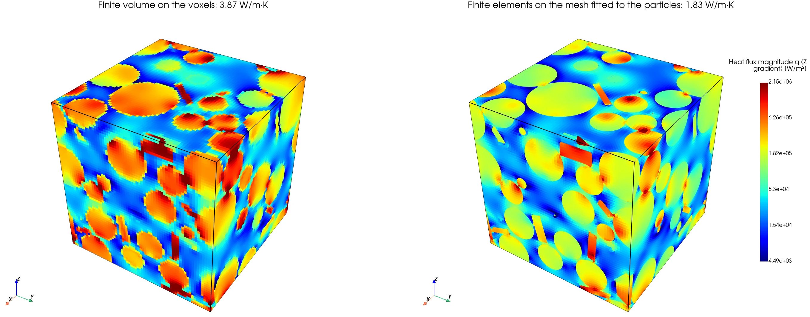
Stiffness and thermal expansion on the fitted mesh (5.10.0)
- The same mesh with displacement elements: the six strains and the thermal load are solved together on all cores; a film of resin between two particles is an interface element with the stiffness of a thin layer held between two stiff faces.
- Fused silica 60 vol% in epoxy: the voxel elements give 24.8 → 16.2 GPa from 32³ to 192³ and are still falling, the FEM 15.4 → 14.8 GPa from 32³ to 64³; the thermal expansion 10.3 → 15.6 ppm/K against 16.0 → 16.6. Extrapolated to an infinitely fine grid both reach 14.1-14.2 GPa and about 17 ppm/K (5.12.0).
- On the same mesh FEniCSx gives the same stiffness and thermal stress to twelve digits.
- Against a measurement: glass spheres in epoxy (J. C. Smith, J. Res. Natl. Bur. Stand. A 80A (1976) 45, doi:10.6028/jres.080A.008) at 23 / 30 / 40 / 50 vol%: measured 5.08 / 6.01 / 7.94 / 12.09 GPa, FEM 5.13 / 6.32 / 8.22 / 11.22, voxel elements of the same grid 5.82 / 7.62 / 10.68 / 16.16.
- Bonded contacts: particles that were sintered or pressed together are joined by a neck of the radius entered. AlSiC with 63 vol% SiC (measured 8.21 ppm/K): 9.23 without necks, 8.20 with a neck of 0.6 of the particle radius.
- Every FEM result is drawn in 3D on the mesh itself, the voxel solver's field beside it with the same camera and colour scale.
- In the 3D view (5.11.0) a run solved on the mesh opens in the FEM mesh style: particle surfaces and RVE faces are the element faces, each in its element's colour, with the element edges on request; every phase has its own opacity, and Solo shows one filler of a blend through the others.
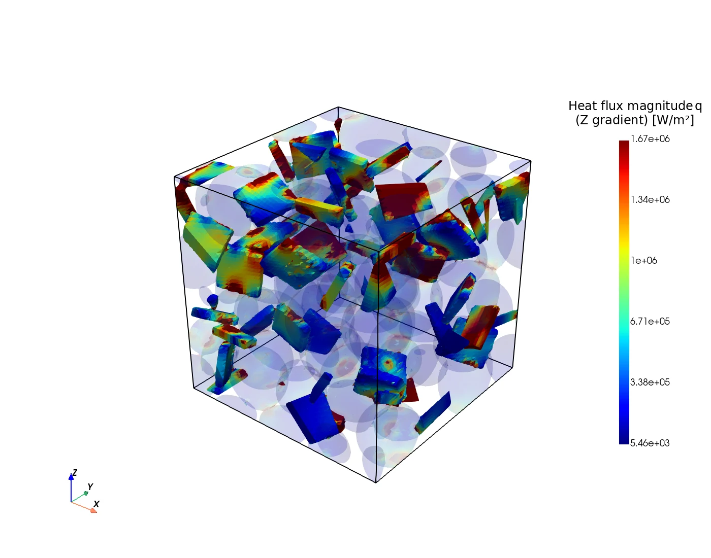
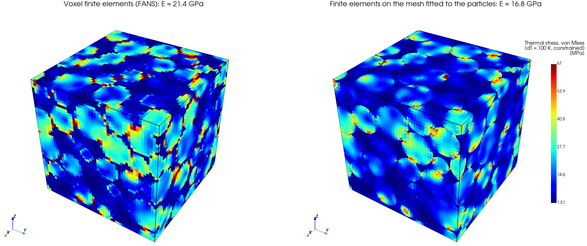
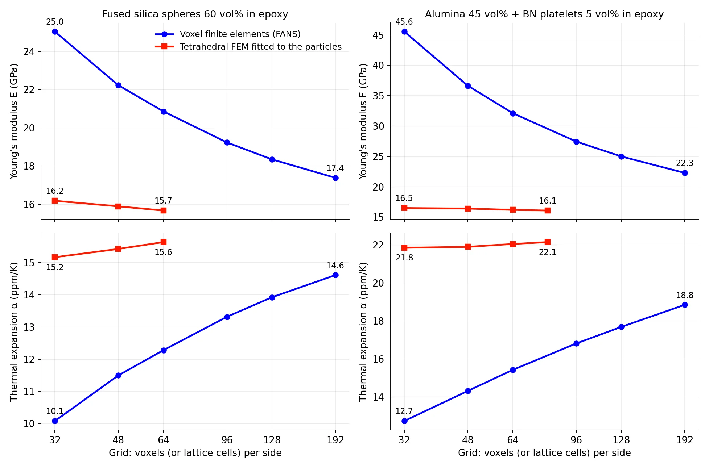
A graded mesh for blends of very different sizes (5.10.0)
- An octree whose cells are as small as the particle they describe, cut at the exact surfaces; its finest cell may be smaller than the voxel, so thin fibres and fine fillers keep their shape.
- Grains of 3 µm with 0.6 vol% fibres 20 times thinner: 3.6 times fewer tetrahedra than the lattice mesh of the same finest cell, 14 times fewer one level finer. Dense blends whose fines fill every gap save 15 to 31 %: the count follows the surface area, not the mesher.
- The multigrid solve runs on all cores: a conduction solve at 64³ in 7 s (15 s in 5.9.0).
- Compression with contacts and friction: the spheres of a compression are also pressed by particle dynamics with lubrication films of their real width and Coulomb friction - 11.5 / 25 / 35 times the plain resin's stress after 30 % for a friction coefficient of 0 / 0.25 / 0.5 at 50 vol%.
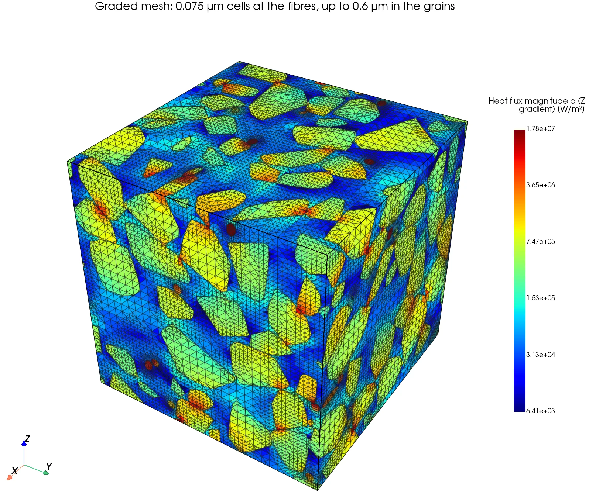
Sensitivity analysis: which inputs move a property
The finished cases of a DOE study are asked by every family of method in common use which inputs move a response - alone, through curvature and together with other inputs - and the answer is read from their agreement (5.11.0).
Four inputs of an alumina-filled epoxy, 24 cases
- Alumina content 20-50 vol%, particle diameter 6-14 µm, filler conductivity 5-35 W/m·K and matrix conductivity 0.15-0.35 W/m·K varied together over a Latin hypercube; the thermal conductivity of every case.
- The content leads in 24 of 25 measures and takes part in 75 % of the variance (Sobol S_T); the matrix conductivity follows (consensus 0.44), then the filler's (0.25) and the diameter (0.17). The 25 rankings agree with Kendall's W = 0.80.
- The filler's conductivity is invisible to a plain correlation (r = 0.13, p = 0.54) because the content moves k far more; held fixed, the others no longer hide it (partial rank correlation 0.79, p = 2×10⁻⁵).
- Content × filler conductivity is the interaction three of five measures find (ANOVA p = 0.005): the filler's conductivity matters more the more filler there is. Six models are scored by cross-validation and the consensus weighs each by its Q² (quadratic surface 0.94, Gaussian process 0.91, random forest 0.72).
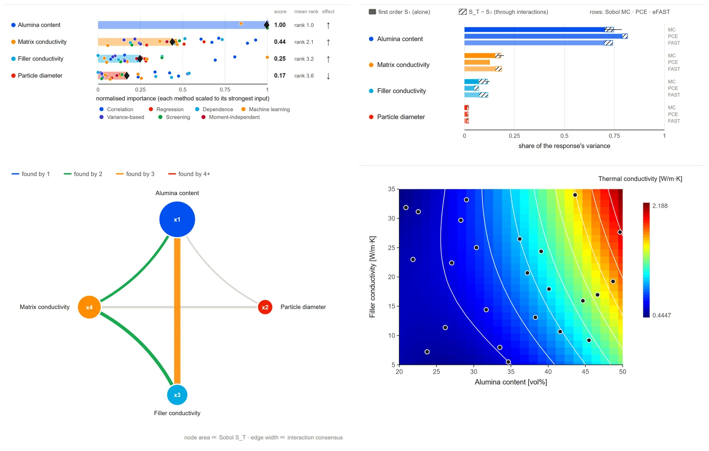
Coupled analyses
Since version 5.6.0 MPSim couples heat to stress, current to temperature and cure to flow. Each example below is a preset, run as loaded on an 18-thread laptop.
Thermal stress and warpage of a moulded underfill on a die
A 300 µm moulded underfill (8 µm silica, 50 vol%) on a 300 µm Si die, stress-free at the cure temperature of 175 °C, with the die side at 125 °C and the top at 95 °C. The heat flowing through the film sets the temperature of every voxel, every voxel expands by its own strain, and laminate theory releases the film bonded to the die (70 × 70 × 375 voxels, 168 s). The film warps by −12.89 µm over 10 mm with the edges up; at its uniform mean temperature it would warp by −11.97 µm, so the gradient adds −0.92 µm.
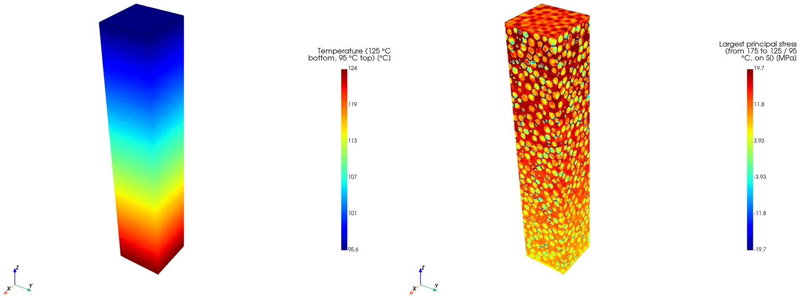
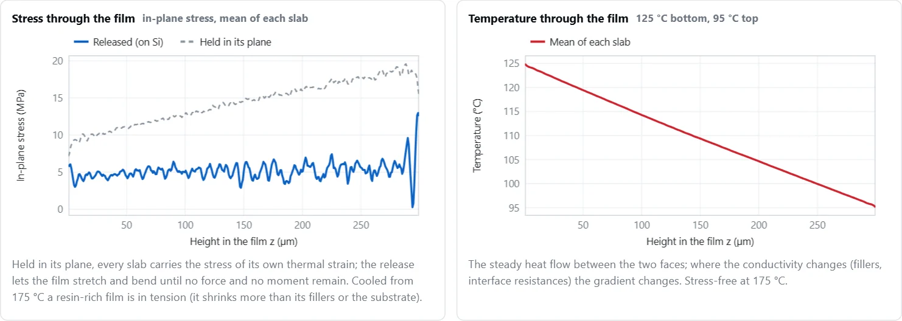
| Quantity | Value |
|---|---|
| Warpage over 10 mm (curvature) | −12.89 µm (−1.03 1/m) |
| Heat through the film, kz | 51.4 kW/m², 0.514 W/m·K |
| Epoxy: largest principal / peeling stress (99.9 %) | 27.2 / 25.9 MPa |
| Die: top / bottom face | −36.9 / +26.5 MPa |
Joule heating of an Ag-filled adhesive joint
A 25 µm joint of 5 µm silver spheres (45 vol%) touching both electrodes carries a current density stepped up to 3·10⁸ A/m²; the silver's resistance rises with temperature (TCR 0.0038 1/K, from R. A. Matula, J. Phys. Chem. Ref. Data 8, 1147 (1979), doi:10.1063/1.555614). At 2.5·10⁸ A/m² the joint settles at 426.5 °C, only 1.7 K above its faces: the current crowds through the contacts, but the path to ambient sets the temperature. At 3·10⁸ A/m² the steady state lies above 1000 °C; as one resistor the joint runs away above 3.2·10⁸ A/m² (70 × 70 × 50 voxels, 81 s).
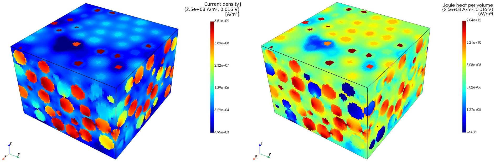
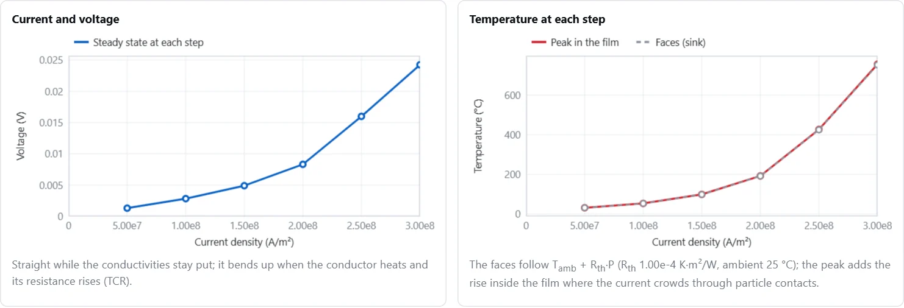
A moulded underfill that gels before the mould closes
Silica 5 µm (40 vol%) in epoxy pressed at 1 %/s towards 55 % in a mould at 175 °C while the resin cures (Kamal–Sourour kinetics of a moulding compound from E. Franieck et al., Polymers 13, 1734 (2021), doi:10.3390/polym13111734; the Castro–Macosko viscosity rise of a neat epoxy from S. K. Romberg et al., ACS Appl. Polym. Mater. 6, 4874 (2024), doi:10.1021/acsapm.4c00607). The axial stress rises from 1 Pa to 2.8 kPa as the conversion approaches the gel point; the compound gels at 69 s with the mould closed by 49.9 % (70³ voxels, 230 s).
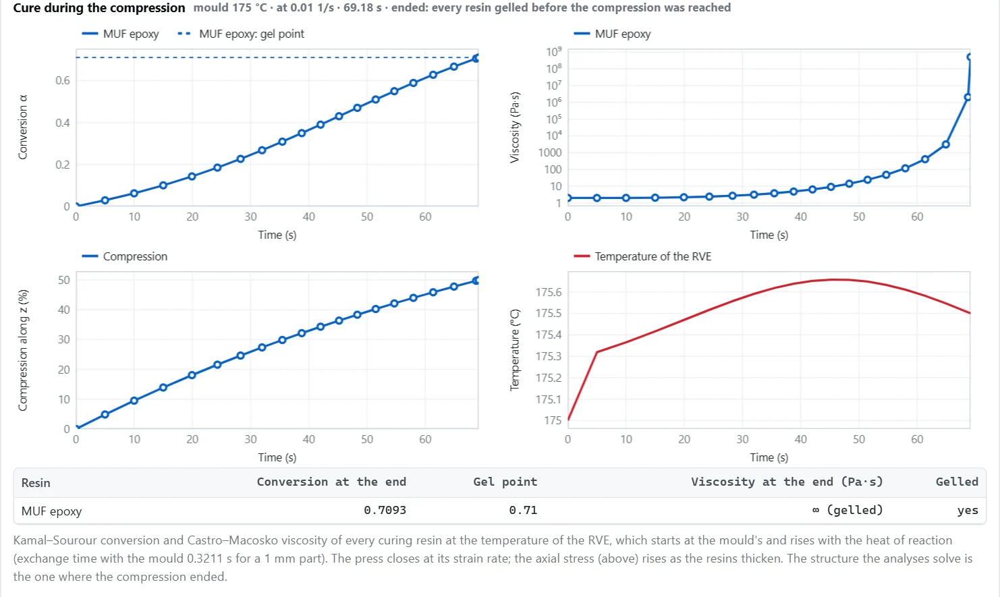
The workspace
The ribbon follows the order of a study. The command panel on the left holds the inputs, the centre shows the 3D view, the Result Viewer or the report, and the inspector on the right controls the display.
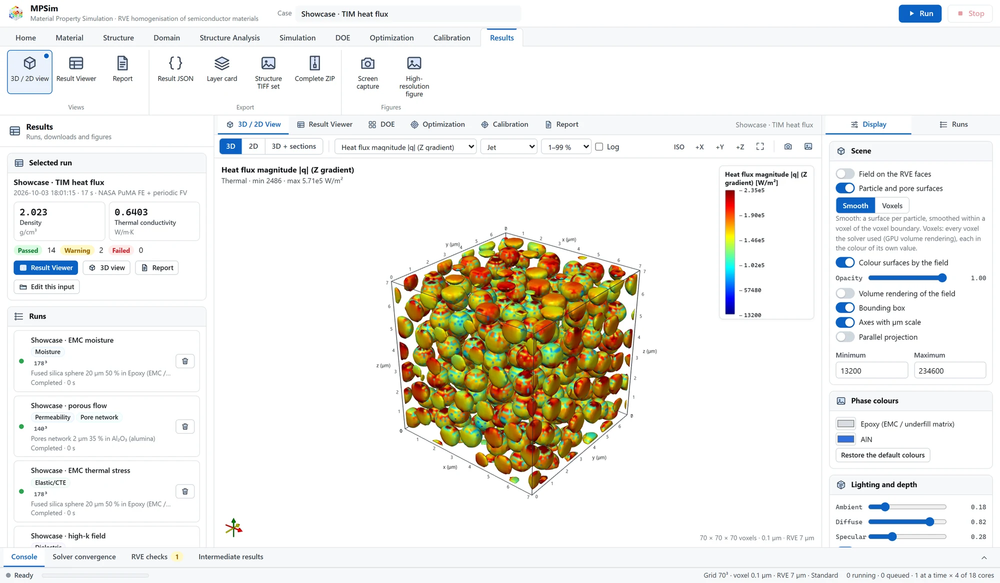
Verification
The engine is verified against problems with known solutions. Every run also reports its own checks (RVE size, resolution, particle count, convergence and rigorous bounds) as passed, warning or failed, together with the reason; a structure that misses its loading is not solved. The particle generator is audited at 40-70 vol% for every shape and size distributions of CV 0.2-0.5 on 256³-400³ grids: every case reaches its loading within 2 %, its mean sizes within 2 % of the input (3 % with only 800 particles in the box).
Presets
- EMC · epoxy + fused silica
- Underfill · epoxy + silica
- MUF flowability · bimodal silica
- MUF from flow to the cured part
- EMC reliability · moisture, swelling, above Tg
- Highly filled · silica 66 vol% with progressive overlap
- TIM · silicone + Al₂O₃ with interfacial resistance
- TIM · epoxy + AlN
- Hybrid TIM · Al₂O₃ + AlN blend with contact resistance
- Statistical RVE · TIM, small boxes until the mean settles
- Thermal sheet · h-BN platelets
- Thin film · polyimide + h-BN
- Conductive adhesive · Ag flakes
- Sintered silver die attach
- EMI shielding · Ni rods
- Noise-suppression sheet · Sendust flakes
- Low-Dk · hollow silica
- High-k · BaTiO₃
- Low CTE · ZrW₂O₈
- Porous low-k film
- Porous ceramic · Al₂O₃
- UPW membrane · PTFE
- Sintered gas filter · SUS316L
- Fibrous insulation · E-glass
- MUF DOE · Al₂O₃ + BN platelet stacks
- Heat spreader · Cu + diamond
- Power-module baseplate · AlSiC
- mmWave substrate · PTFE + silica
- PCB thermal vias
- Die-attach solder voids
- Package-level power inductor · carbonyl iron
- Calibration · MUF Al₂O₃: interface and contact resistance
- Mechanical test · EMC under compression
- Compression · closed mould with voids
- Compression · two resins side by side
- Cure–flow · MUF pressed at 175 °C
- Thermal stress and warpage · MUF on a Si die
- Joule heating · Ag-filled adhesive joint
- FEM · alumina + BN compound on a tetrahedral mesh fitted to the particles
- FEM · EMC stiffness and CTE on a tetrahedral mesh fitted to the particles
- FEM · grains with thin fibres on a graded tetrahedral mesh
- Measured benchmark · glass spheres 40 vol% in epoxy: FEM and voxel elements against 7.94 GPa
- FEM · AlSiC, SiC 63 vol%: bonded contacts fitted to the measured expansion
- Compression · silica 50 vol% with contacts and friction beside the resin flow
- Benchmarks · Rayleigh's sphere array, Hasselman–Johnson, Maxwell Garnett, Einstein, Trouton, two layers, Poiseuille, Maxwell's moisture solution
- Benchmarks · particle dynamics against Krieger–Dougherty and against Boyer et al.'s measured law
- Benchmark · DOE · glass spheres in epoxy at Smith's four loadings
- Short glass fibres · diameter and length distributed independently
- Alumina flakes · three axes
- Crushed silica · sized by volume-equivalent diameter
- Structure from a TIFF · CT-like stack of an EMC
- Viscosity from a TIFF · touching silica spheres of a scan, separated and sheared
- Viscosity from a particle list · an earlier run's particles.csv drawn again without generating
- Sensitivity · alumina in epoxy: content, particle size and the two conductivities over 24 cases
Benchmarks against the literature
Every comparison with a published measurement or a published solution is a preset (Home → Benchmarks against the literature) with a tutorial in the user guide; appendix B.7 of the guide lists them with every source. Each number is that of the preset run as loaded with this version.
Predictions against published measurements
| Preset and quantity | Measured | MPSim |
|---|---|---|
| Benchmark · DOE · glass spheres in epoxy at Smith's four loadings; Measured benchmark · glass spheres 40 vol% in epoxyYoung's modulus of epoxy with glass spheres, 22.5 / 30.3 / 39.6 / 49.6 vol% [1] | 5.08 / 6.01 / 7.94 / 12.09 GPa | FEM 5.12 / 6.32 / 8.15 / 11.22 (+0.7 %, +5.1 %, +2.6 %, -7.2 %); voxel elements 5.83 / 7.62 / 10.68 / 16.16 (+14.7 %, +26.7 %, +34.6 %, +33.7 %); 48³ |
| Benchmark · particle dynamics against Boyer et al.'s measured law (friction 0.25, 50 vol%)Shear viscosity of non-Brownian spheres / the liquid's, 40 / 50 / 55 vol% [2] | 7.4 / 31.9 / 145.0 | friction 0.25 (default): 6.1 / 22.9 / 104.2; friction 0.5: 6.4 / 30.3 / 408.9 |
| Power-module baseplate · Al-Si7Mg + SiC 63 vol% (AlSiC)Conductivity and expansion of SiC 63 vol% in Al-Si7Mg [3] | 178 W/m·K, 8.21 ppm/K | 195 W/m·K (+10 %; the tetrahedral FEM, interface 1e-8 m²K/W; voxels 189), 8.85 ppm/K (+8 %, voxel elements); FEM 9.23 ppm/K (+12 %) |
| mmWave substrate · PTFE + fused silica 60 wt%Permittivity of PTFE with 60 wt% silica [5] | Dk 2.9 | Dk 3.01 (+3.8 %) |
| Package-level power inductor · epoxy + carbonyl iron 54 vol%Permeability of a printed carbonyl-iron core [6] | μr 7.5 | μr 5.97 (−20 %; spheres, where the printed core's particles touch and align; see the preset) |
Earlier versions gave the law of Boyer et al. as 5.7 / 20.7 / 103 and chose the default friction 0.25 with it - an evaluation that kept only μ1 of the contact term of their eq. (8). Against the law as printed no single friction coefficient follows it over the three loadings; the default is still 0.25.
A parameter fitted to a published measurement
| Preset and quantity | Measured | MPSim |
|---|---|---|
| Heat spreader · Cu + diamond 50 vol% (400 µm, interface from a measurement)Conductivity of Cu + diamond 50 vol% [4] | 640 W/m·K | the paper's interface conductance 36–56 MW/m²K gives 767–794 W/m·K (+20 to +24 %); 10.6 MW/m²K reproduces the measurement (640) |
| FEM · AlSiC, SiC 63 vol%: bonded contacts fitted to the measured expansionExpansion of AlSiC with bonded contacts between the SiC [3] | 8.21 ppm/K | 9.23 / 9.15 / 8.86 / 8.20 ppm/K for a neck of 0 / 0.3 / 0.45 / 0.6: a neck of 0.6 reproduces the measurement |
Published and exact solutions
| Preset and quantity | Solution | MPSim |
|---|---|---|
| Benchmark · Rayleigh's simple cubic array of spheres (conduction)Conductivity of a simple cubic array of spheres (15.5 vol%, 100 : 1) [7] | 1.5324 (Rayleigh's printed coefficient 1.65: 1.5337) | FEM 1.5347 (+0.15 %); FV 1.5394 (+0.46 %) |
| Benchmark · Hasselman–Johnson: dilute spheres with an interfacial resistance (DOE)Conductivity of dilute spheres with an interfacial resistance (5 vol%, 20 : 1) [8] | 1.1355 / 1.0325 / 0.9976 (α 0 / 0.5 / 1) | 1.1357 / 1.0326 / 0.9977 (max 0.02 %) |
| Benchmark · Maxwell Garnett: permittivity of dilute spheresPermittivity of dilute spheres (5 vol%, ε 100 in 3) [9] | 3.4320 | 3.4355 (+0.10 %) |
| Benchmark · Einstein: viscosity of a dilute rigid sphereViscosity of a dilute rigid sphere (1.9 vol%) [10] | 1.0485 ([η] 2.5) | 1.0501 ([η] 2.59, +3.44 %) |
| Benchmark · particle dynamics against Krieger–Dougherty (frictionless spheres, 50 vol%)Viscosity of frictionless spheres, 40 / 50 / 55 vol% [11] | 4.80 / 11.38 / 23.07 (φm 0.64) | 5.70 / 11.77 / 18.55 |
| Benchmark · Trouton: compression of a resin aloneCompression of a resin alone, sides free (axial stress) [12] | 3ηε̇ = 3 Pa | 3 Pa (exact) |
| Benchmark · two layers: series and parallel (exact)Two equal layers, across and along (k, ε_r) · exact solution | k 0.39735 / 15.1; ε 5.57956 / 6.85 | k 0.39735 / 15.1; ε 5.57956 / 6.85 (exact) |
| Benchmark · Poiseuille: a straight cylindrical pore (flow, tortuosity, acoustic lengths)Straight cylindrical pore, r 16 µm: permeability, tortuosity, Λ, Λ′ [13] | K φr²/8 = 4.060e-12 m²; τ 1; Λ = Λ′ = 16 µm | K 3.914e-12 (-3.60 %); τ 1.0000; Λ 15.85, Λ′ 15.85 µm |
| Benchmark · Maxwell: moisture diffusion around impermeable spheresMoisture diffusivity around impermeable spheres (5 vol%) [14] | D*/D_m = 2/(2+φ) = 0.9756 | 0.9726 (-0.31 %) |
| PCB thermal vias · FR-4 with Cu-plated viasConductivity through and along a laminate with straight Cu vias · exact solution | parallel paths 8.9518 W/m·K; in the plane 0.8456 (Maxwell, parallel cylinders) | 8.9517 (−0.001 %); 0.8452 (−0.05 %) |
| Die-attach solder · SAC305 with 15 % voidsConductivity of solder with 15 % insulating voids [14] | below 2(1 − φ)/(2 + φ) = 79.1 % of the dense value (Maxwell's bound for insulating spheres) | 76.9 % |
- J. C. Smith, “Experimental values for the elastic constants of a particulate-filled glassy polymer”, J. Res. Natl. Bur. Stand. A 80A (1), 45 (1976). doi:10.6028/jres.080A.008 — table 2.
- F. Boyer, É. Guazzelli, O. Pouliquen, “Unifying suspension and granular rheology”, Phys. Rev. Lett. 107 (18), 188301 (2011). doi:10.1103/PhysRevLett.107.188301 — eq. (8), μ1 0.32, μ2 0.7, I0 0.005, φm 0.585.
- M. Guo, J. Liu, C. Jia, S. Guo, Y. Li, H. Zhou, “Microstructure and properties of SiCp/Al electronic packaging materials fabricated by pseudo-semi-solid thixoforming”, Journal of University of Science and Technology Beijing 36 (4), 489–495 (2014). doi:10.13374/j.issn1001-053x.2014.04.011 — as tabulated in L. Lai et al., Micromachines 14 (8), 1491 (2023), Table 2, doi:10.3390/mi14081491.
- Q. Wang, Z. Ye, L. Liu, J. Bai, Y. Zhao, Q. Hu, H. Liu, L. Hu, X. Guo, Y. Xiao, W. Cao, Z. Yang, “High thermal conductivity diamond–copper composites prepared via hot pressing with tungsten-coated interfacial layer optimization”, Materials 18 (16), 3882 (2025). doi:10.3390/ma18163882.
- K. P. Murali, S. Rajesh, O. Prakash, A. R. Kulkarni, R. Ratheesh, “Preparation and properties of silica filled PTFE flexible laminates for microwave circuit applications”, Composites Part A 40 (8), 1179–1185 (2009). doi:10.1016/j.compositesa.2009.05.007.
- Y. Sugawa, K. Ishidate, M. Sonehara, T. Sato, “Carbonyl-iron/epoxy composite magnetic core for planar power inductor used in package-level power grid”, IEEE Trans. Magn. 49 (7), 4172–4175 (2013). doi:10.1109/TMAG.2013.2250925.
- Lord Rayleigh, “On the influence of obstacles arranged in rectangular order upon the properties of a medium”, Philos. Mag. 34 (211), 481–502 (1892). doi:10.1080/14786449208620364.
- D. P. H. Hasselman, L. F. Johnson, “Effective thermal conductivity of composites with interfacial thermal barrier resistance”, J. Compos. Mater. 21 (6), 508–515 (1987). doi:10.1177/002199838702100602.
- J. C. Maxwell Garnett, “Colours in metal glasses and in metallic films”, Philos. Trans. R. Soc. Lond. A 203, 385–420 (1904). doi:10.1098/rsta.1904.0024.
- A. Einstein, “Eine neue Bestimmung der Moleküldimensionen”, Ann. Phys. 324 (2), 289–306 (1906), doi:10.1002/andp.19063240204; correction: Ann. Phys. 339 (3), 591–592 (1911), doi:10.1002/andp.19113390313.
- I. M. Krieger, T. J. Dougherty, “A mechanism for non-Newtonian flow in suspensions of rigid spheres”, Trans. Soc. Rheol. 3 (1), 137–152 (1959). doi:10.1122/1.548848.
- F. T. Trouton, “On the coefficient of viscous traction and its relation to that of viscosity”, Proc. R. Soc. Lond. A 77 (519), 426–440 (1906). doi:10.1098/rspa.1906.0038.
- D. L. Johnson, J. Koplik, R. Dashen, “Theory of dynamic permeability and tortuosity in fluid-saturated porous media”, J. Fluid Mech. 176, 379–402 (1987). doi:10.1017/S0022112087000727.
- J. C. Maxwell, A Treatise on Electricity and Magnetism, Vol. 1, Clarendon Press, Oxford (1873), art. 314 (a book; no DOI).
- R. S. Farr, R. D. Groot, “Close packing density of polydisperse hard spheres”, J. Chem. Phys. 131 (24), 244104 (2009). doi:10.1063/1.3276799.
- T. Ishigami, T. Homma, “An importance quantification technique in uncertainty analysis for computer models”, Proc. First Int. Symp. on Uncertainty Modeling and Analysis, 398–403 (1990). doi:10.1109/ISUMA.1990.151285.
- S. Timoshenko, “Analysis of bi-metal thermostats”, J. Opt. Soc. Am. 11 (3), 233 (1925). doi:10.1364/JOSA.11.000233.
Download and install
PC without internet
Download MPSim-…-offline-win64.zip from the
latest release. It contains the official Python
runtime, every wheel including NASA PuMA, and openEMS. Unzip to a short path such as C:\MPSim, run
1_INSTALL_OFFLINE.bat, then 2_RUN_LOCAL.bat.
PC with internet and conda
git clone https://github.com/HyoseokByun-opt/MPSim.git C:\MPSim
cd C:\MPSim
1_INSTALL.bat
2_RUN_LOCAL.batUser guides, 333 pages in English and 316 in Korean: English (PDF) · Korean (PDF). Each simulation chapter describes how the property is measured, how MPSim computes it and how the results are read.
Cite
Published work that uses MPSim should cite the software together with the solvers that produced the results (listed in the README).
@software{byun_mpsim,
author = {Byun, Hyoseok},
title = {{MPSim: Material Property Simulation}},
version = {5.10.2},
year = {2026},
publisher = {Zenodo},
doi = {10.5281/zenodo.23120194},
url = {https://github.com/HyoseokByun-opt/MPSim}
}Author
Hyoseok Byun — GitHub · LinkedIn
Declaration of AI assistance. The code, the verification tests and the user guides were written with the assistance of Claude (Anthropic), an AI assistant, under the author's direction. The author reviewed and edited the output and takes full responsibility for the content.